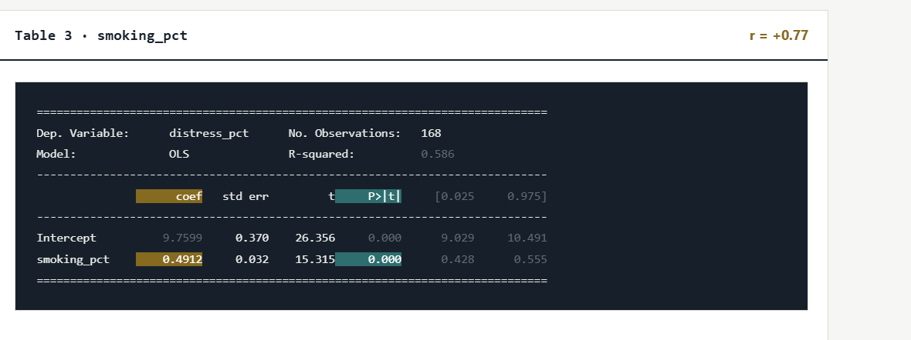

Relationship between smoking and mental distress
It is a strong correlation, meaning as one variable goes up, the other tends to go up as well. This means there is a strong relationship between smoking percentages and distress percentages. As smoking rates increase, distress rates also tend to increase.

What It Means for People
In communities where higher percentages of people smoke, we also see higher percentages of people reporting distress. It suggests that smoking and distress are linked, often indicating that individuals dealing with high distress may be more likely to smoke, or that both are linked to similar environmental stressors.